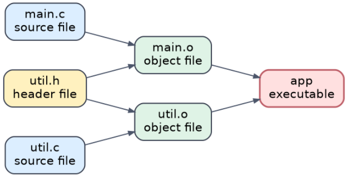

A central idea in build automation is the dependency graph. GNU Make expresses it through rules made of a target, its prerequisites, and the recipe that updates it. A target is out of date if it does not exist, or if it is older than any of its prerequisites. So the build tool does not have to rebuild everything every time: it compares the files' modification times along those relationships and reruns only the steps that are actually needed.
app: main.o util.o
gcc -o app main.o util.o
main.o: main.c util.h
gcc -c main.c
util.o: util.c util.h
gcc -c util.cThis defines a graph, drawn below. The executable app depends on two object files; each object file depends on its own source file and on the shared header.

util.h feeds both object files; each .c file feeds only its own.The graph answers "what must be redone?" for any edit. The syntax of C is not the point; the point is that automation can describe relationships between files and let the tool decide.
| You edit… | Rebuilt, in order | Untouched |
|---|---|---|
main.c | main.o → app | util.o |
util.c | util.o → app | main.o |
util.h | main.o and util.o → app | Nothing |
| Nothing | Nothing | Everything |
util.h declaring int add(int a, int b);, util.c defining add, and main.c calling it from main), save the Makefile above, and build once with make. Then run touch util.h and make again, and compare with touch main.c and make. The commands Make prints should match the rows of the table above. (If you use a pattern rule, remember the missing header dependency from 11.4.)
In practical automation, an idempotent workflow is one where running it several times leaves the project in the same state as running it once: repeating it causes no inconsistent or progressively worse outcomes. Build systems aim for this. If nothing relevant has changed, running make again should do little or nothing. If only one source file changed, only the necessary steps happen. The result stabilises instead of drifting each time you rerun.
| Step | Safe to re-run? | Why |
|---|---|---|
mkdir -p build | Yes | Does nothing if the directory already exists |
make after a successful build | Yes | Every target is up to date, so no recipe runs |
python3 -m venv .venv | Yes | Reuses the existing environment; installed packages are kept |
echo 'export X=1' >> ~/.profile | No | Appends another copy of the line every run |
cat > README.md <<EOF … | Not if the file was edited | Overwrites the file, replacing any edits made since the last run |
This matters beyond your own laptop. In CI the same workflow runs over and over on fresh machines, and a setup step that degrades with each run, or only works the first time, can break someone's build.
FIT2109 · Week 11 · Monash University · by Dr. Zahra Mirzamomen